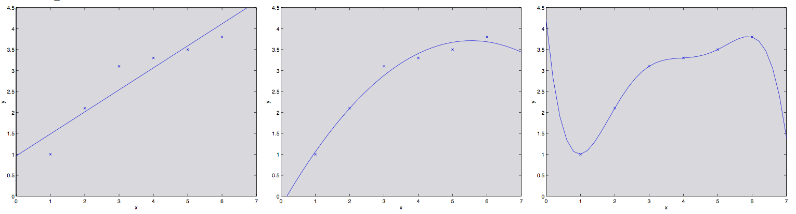
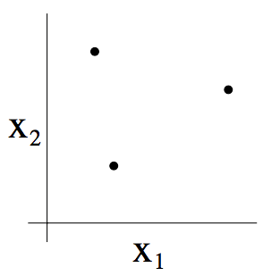
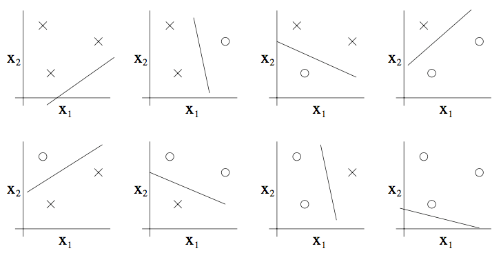
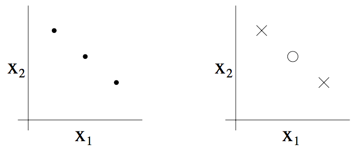

前言
cs229讲义 斯坦福大学的CS229课程是学习机器学习的必备之课，之前是由吴恩达主讲的课程，后来由于不明原因课程被斯坦福大学下架。
note4的主要内容：偏差和方差权衡，假设集合有限/无限的学习理论
重新理解，加油~
Part VI 学习理论
1，偏差和方差的权衡
在讲线性回归的时候，讨论过这样的问题：拟合数据的时候，选择线性的$y = \theta_{0} +\theta_{1}x $“简单”模型，还是选择多项式的$y=\theta_{0}+\theta_{1}x+···\theta_{5}x^{5} $这种“复杂”模型。如下图所示：

最右侧图所示，用一个五次多项式来进行拟合，得到的并不是一个好模型。这个五次多项式对于训练集中的每一个 $x $都给出了非常好的预测的 $y $ 值，我们也不能指望这个模型能够对训练集之外的点给出靠谱的预测。换句话说，用这种高次多项式来对训练集进行学习，得到的模型根本不能扩展运用到其他数据上。一个模型的泛化误差正是那些不属于训练集的样本预测偏差。
最左边的线性拟合和最右边的高次多项式拟合都有非常大的泛化误差，这两个模型各自出的问题是很不一样的。如果 $y $ 和 $x $ 之间的关系不是线性的，那么即便我们有一个非常大规模的训练集，然后用来进行线性拟合，得到的线性模型都还是不能够准确捕捉到数据的分布。我们粗略地将一个模型的偏差（bias）定义为预测的泛化误差，即便我们要去拟合的对象是一个非常大的甚至是无限的训练数据集。这样的话，对于上面三幅图中所展示的那个情况来看，最左边的那个线性模型就具有特别大的偏差，可能是对数据欠拟合（也就是说，没有捕捉到数据所体现的结构特征）。
除了这个偏差之外，还有另外一个构成泛化误差的因素，也就是模型拟合过程的方差（variance）。在最右边的图中，使用了五次多项式进行了拟合，这样有很大的风险，很可能我们基于数据拟合出来的模型可能碰巧只适合于眼下这个小规模的有限的训练集，而并不能反映 $x $ 和 $y $ 之间更广泛的关系。例如，在实际中，可能我们选择的训练集中的房屋碰巧就是一些比平均价格要稍微贵一些的房屋，也可能有另外的一些比平均值要低一点的房屋，等等。通过对训练集拟合得到的这个“不太靠谱的”的模式，我们得到的可能也就是一个有很大泛化误差的模型。这样的话，我们就说这个模型的方差很大。
通常情况下，咱们需要在偏差（bias）和方差（variance）之间进行权衡妥协。如果我们的模型过于“简单”，而且参数非常少，那这样就可能会有很大的偏差（bias），而方差（variance）可能就很小；如果我们的模型过于“复杂”，有非常多的参数，那就可能反过来又特别大的方差（variance），而偏差（bias）就会小一些。在上面三种不同拟合的样例中，用二次函数来进行拟合得到的效果，明显是胜过一次线性拟合，也强于五次多项式拟合。
2，预备知识
这部分，开始进入到机器学习的理论，本章内容非常有趣，而且有启发性，还能帮助我们培养直觉，能得到在不同背景下如何最佳应用学习算法的经验规则。此外，我们还会探究一些问题：首先，上文我们刚刚谈论到的偏差和方差，能不能总结一下？这个问题还会引出关于模型选择的方法，这些方法可以在对一个训练集进行拟合的时候来帮助确定要用的多项式应该是几阶的。其次，在机器学习的过程中，我们真正关注的也就是泛化误差，不过绝大部分的学习算法都是将训练集和模型结合的。那么针对训练集的表现好坏程度，为何就能告诉我们泛化误差的信息呢？例如，我们能将训练集的误差和泛化误差联系起来么？第三个，也是最后一点，是否存在某些条件，又能否在这些条件下证明某些学习算法能够良好工作？
我们先来给出两个很简单又很有用的引理。
引理1 (联合约束，The union bound)。设 $A_{1}, A_{2}, …, A_{k}$ 是 $K$个不同事件（但不一定互相独立），则有： 在概率论中，联合约束通常被当做是公理，实际上也很直观： $k $ 个事件同时发生的概率最多是 $k $ 个不同的事件每个都发生的概率的总和。
引理2 (Hoeffding 不等式) 。设 $Z1, … , Zm$ 是$m $ 个独立且服从伯努利分布的随机变量。例如：$P(Z_{i}=1)=\phi $ 而 $P(Z_{i}=0)=1−\phi $. 设$\hat{\phi}=\frac{1}{m}\sum_{i=1}^{m}Z_{i}$是这些随机变量的平均值，然后设任意的 $\gamma > 0$ 为某一固定值，则有：
这个引理（也称为切尔诺夫约束）表明，如果我们我们从一个伯努利分布的随机变量中选取平均值 $\hat\phi$来作为对 $\phi$ 的估计值，那么只要 $m $ 足够大，我们偏移真实值很远的概率就比较小。另外一种表述方式是：如果你有一个硬币，抛起来落下人头朝上的概率是 $\phi$，如果你抛了 $m $次，然后计算人头朝上的比例，若 $m $ 非常大，那么这个比例的值，就是一个对 $\phi$ 的一个概率很好的估计。
基于上面这两个引理，我们就可以去证明在机器学习理论中一些很深刻和重要的结论了。
为了简化表述，我们先关注一下二分法分类，其中的标签简化为 $y \in \{0, 1\} $。然后我们即将讲到的所有内容也都会推广到其它问题中，例如回归问题以及多类别的分类问题等等。
假设我们有一个给定的训练集 $S = \{(x^{(i)},y^{(i)});i = 1,…,m\} $，其样本规模为 $m $，集合中的训练样本 $(x^{(i)},y^{(i)}) $ 是可以符合某概率分布 $\mathcal{D} $ 的独立且同分布的随机变量。设一个假设为 $h $，我们则用如下的方法定义训练误差（也成为学习理论中的经验风险或者经验误差 ）：
这个值只是假设模型 $h $ 分类错误样本占据训练样本总数的分数。如果我们要特定指针对某个训练样本集合 $S$ 的经验误差 $\hat{\epsilon}(h) $，可以写作 $\hat{\epsilon}_{S}(h) $。然后我们就可以定义泛化误差（generalization error）为：
经验误差 $\hat{\epsilon}(h) $ 的这个定义实际上也就相当于，基于分布 $D $ 给出的一个新的样本 $(x, y) $ ，假设模型 $h $ 对该样本分类错误的概率。
要注意，这里我们有一个预先假设，也就是训练集的数据与要用来检验假设用的数据都服从同一个分布 $D $（这一假设存在于对泛化误差的定义中），这个假设通常也被认为是 PAC 假设之一。
考虑线性分类的情况，假设 $h_{\theta}(x) = 1\{θ^{T}x \geq 0\} $，拟合参数 $\theta$ 的合理方法是什么呢？一个思路就是可以使训练误差最小化，然后选择取最小值时候的$\theta$：
我们把上面这个过程称之为经验风险最小化（empirical risk minimization，缩写为 ERM），而这种情况下通过学习算法得到的假设结果就是 $\hat{h} = h_{\hat{\theta}}$ 。我们把 ERM 看做为最“基础”的学习算法，在这一系列的讲义中我们主要关注的就是这种算法。（其他的例如逻辑回归等等算法也可以看作是对 ERM 的某种近似。）
在咱们关于机器学习理论的研究中，有一种做法很有用，就是把具体的参数化抽象出去，也把是否使用线性分选器之类的问题也抽象出去。我们把学学习算法所使用的假设类$\mathcal{H}$定义为所有分类器的集合。对于线性分类问题来说，$\mathcal{H} = \{ h_{\theta}: h_{\theta}(x) = 1{θ^{T}x \geq 0}, \theta \in \mathcal{R}^{n+1}\} $，是一个对 $X $进行分类的所有分类器的集合，其中所有分类边界为线性。更广泛来说，假设我们研究神经网络，那么可以设 $H $ 为能表示某些神经网络结构的所有分类器的集合。
现在就可以把经验风险最小化（ERM）看作是对函数类 $H $ 的最小化，其中由学习算法来选择假设（hypothesis）：
3，集合$\mathcal{H}$有限
首先来考虑假设类有限的学习问题，其中假设类 $\mathcal{H} = {h_{1}, …, h_{k}} $，由 $k $ 个不同假设组成。因此，$\mathcal{H} $ 实际上就是由 $k $ 个从输入特征 $\mathcal{X} $ 映射到集合 $\{0, 1\} $ 的函数组成的集合，而经验风险最小化（ERM）就是从这样的 $k $ 个函数中选择训练误差最小的作为$\hat{h} $。
我们希望能够确保 $\hat{h} $ 的泛化误差，需要两个步骤：首先要表明$\hat{\epsilon}(h) $ 是对所有 $h $ 的 $\epsilon(h) $ 的一个可靠估计。其次就需要表明这个 $\hat{\epsilon}(h) $ 位于 $\hat{h}$ 泛化误差的上界。
任选一个固定的 $h_{i}\in\mathcal{H} $，假如有一个伯努利随机变量$\mathcal{Z} $，其分布下面会定义。 然后我们从 $\mathcal{D} $ 中取样 $(x, y) $，并设 $\mathcal{Z} = 1\{ h_{i}(x) \neq y\} $。也就是说，我们会选择一个样本，然后令 $\mathcal{Z} $ 指示 $h_{i} $ 是否对该样本进行了错误分类。类似地，我们还定义了一个 $\mathcal{Z}_{j} = 1\{ h_{i}(x^{(j)}) \neq y^{(j)}\} $。由于我们的训练样本都是从 $\mathcal{D} $ 中取来的独立随机变量，所以在此基础上构建的 $\mathcal{Z} $ 和 $\mathcal{Z}_{j} $ 也都服从相同的分布。
这样就能找到针对随机选取的训练样本进行错误分类的概率$\epsilon(h) $ — 正好就是 $\mathcal{Z} $ （以及 $\mathcal{Z}_{j} $ ）的期望值。然后，就可以把训练误差写成下面这种形式：
因此，$\hat{\epsilon}(h_{i}) $就正好是 $m $ 个随机变量 $Z_{j} $ 的平均值，而这个 $Z_{j} $ 是服从伯努利分布的独立随机变量，其均值就是$\epsilon (h_{i}) $。接下来，就可以使用 Hoeffding 不等式，得到下面的式子：
这就表明，对于我们给定的某个固定的 $h_{i} $，假如训练样本的规模 $m $ 规模很大的时候，训练误差很接近泛化误差的概率是很高的。然而我们不仅仅满足于针对某一个特定的 $h_{i} $ 能保证 $\epsilon(h_{i}) $ 接近 $\hat{\epsilon}(h_{i}) $ 且接近的概率很高，还要证明同时针对所有的 $h\in\mathcal{H} $ 这个结论都成立。为了证明这个结论，我们设 $A_{i} $ 来表示事件 $|\epsilon(h_{i}) − \hat{\epsilon}(h_{i})| > \gamma $，已经证明了，对于任意的固定的 $A_{i} $，都有 $P(A_{i}) \leq 2exp(−2\gamma^{2}m) $ 成立。接下来，使用联合约束（union bound），就可以得出下面的关系：
如果等式两边都用 1 来减去原始值，则不等关系改变为：
如上所示，至少有 $1-2kexp(-2\gamma^{2}m)$ 的概率，能确保对于所有的 $h\in\mathcal{H} $，$\epsilon(h) $在 $\hat{\epsilon}(h) $附近的 $\gamma$ 范围内。这种结果就叫做一致收敛结果，因为这是一个针对所有的 $h \in\mathcal{H} $ 都同时成立的约束（与之相反的是只针对某一个 $h $ 才成立的情况）。
在上面的讨论中，我们涉及到的是针对某些 $m $ 和 $\gamma $ 的特定值，给定一个概率约束：对于某些 $h \in\mathcal{H} $ , 都有$|\epsilon(h_{i})-\hat{\epsilon}(h_{i})|>\gamma $。这里我们感兴趣的变量有三个：$m $, $\gamma $, 以及误差的概率；我们可以将其中的任意一个用另外两个来进行约束。
例如，我们可以提出下面这样的一个问题：给定一个 $\gamma$ 以及某个 $\delta > 0 $，那么如果要保证训练误差处于泛化误差附近 $\gamma$ 的范围内的概率最小为 $1 – \delta$，那么 $m $ 应该要多大呢？可以设 $\delta = 2kexp(-2\gamma^{2}m) $ 然后解出来 $m $（自己给自己证明一下这样是对的吧！），然后我们就发现，如果有：
并且概率最小为 $1 – \delta $，就能保证对于所有的 $h\in\mathcal{H} $ 都有$|\epsilon(h_{i})-\hat{\epsilon}(h_{i})|\leq\gamma) $。（反过来，这也表明，对于某些 $h\in\mathcal{H} $， $|\epsilon(h_{i})-\hat{\epsilon}(h_{i})|>\gamma) $的概率最大为$\delta$。）这种联合约束也说明了需要多少数量的训练样本才能对结果有所保证。是某些特定的方法或者算法所需要训练集的规模 $m $ 来实现一定程度的性能，这样的训练集规模 $m $ 也叫做此类算法的样本复杂度。
上面这个约束的关键特性在于要保证结果，所需的训练样本数量只有 $k $ 的对数级别，$k $ 即假设集合 $\mathcal{H} $ 中的假设个数。这个特性稍后会很重要。
同理，我们也可以将 $m $ 和 $\delta $ 设置为固定值，然后通过上面的等式对 $\gamma $ 进行求解，然后表明对于所有的 $h\in\mathcal{H}$ ，都有概率为 $1 – \delta $（这里还是要你自己去证明了，不过你相信这个是对的就好了。）。
现在，我们假设这个联合收敛成立，也就是说，对于所有的 $h\in\mathcal{H}$，都有 $|\epsilon(h_{i})-\hat{\epsilon}(h_{i})|\leq\gamma $。我们的学习算法选择了 $\hat{h} = arg\mathop{min}_{h\in\mathcal{H}}\hat{\epsilon}(h) $，关于这种算法的泛化，我们能给出什么相关的证明呢？
将 $h^{\ast } = arg\mathop{min}_{h\in\mathcal{H}}\epsilon(h) $定义为 $\mathcal{H} $ 中最佳可能假设。这里要注意此处的 $h^{\ast } $ 是我们使用假设集合 $\mathcal{H} $ 所能找出的最佳假设，所以很自然地，我们就能理解可以用这个 $h^{\ast } $ 来进行性能对比了。则有：
上面的第一行用到了定理$|\epsilon(h_{i})-\hat{\epsilon}(h_{i})|\leq\gamma $（可以通过上面的联合收敛假设来推出）。第二行用到的定理是 $\hat{h}$ 是选来用于得到最小 $\hat{\epsilon}(h) $，然后因此对于所有的 $h $ 都有 $\hat{\epsilon}(\hat{h})\leq\hat{\epsilon}(h) $，也就自然能推出$\hat{\epsilon}(\hat{h})\leq\hat{\epsilon}(h^{\ast }) $。第三行再次用到了上面的联合收敛假设，此假设表明 $\hat{\epsilon}(h^{\ast }) \leq \epsilon(h^{\ast })+\gamma $。所以，我们就能得出下面这样的结论：如果联合收敛成立，那么 $\hat{h}$ 的泛化误差最多也就与 $\mathcal{H} $ 中的最佳可能假设相差 $2\gamma $。
好了，咱们接下来就把上面这一大堆整理成一条定理（theorem）。
定理 设 $|\mathcal{H}| = k $，$\mathcal{H} $中的元素个数为$k $，然后设 $m $ 和 $\delta $ 为任意的固定值。然后概率至少为 $1 − \delta $，则有：
上面这个可以通过令 $\gamma $ 等于平方根的形式，然后利用我们之前得到的概率至少为 $1 – \delta $ 的情况下联合收敛成立，接下来利用联合收敛能表明 $\epsilon(h)$最多比 $\epsilon(h^{∗ }) = \mathop{min}\limits_{h\in\mathcal{H}}\epsilon(h) $多 $2\gamma $（这个前面我们已经证明过了）。
这也对我们之前提到过的在模型选择的过程中在偏差/方差之间的权衡给出了定量方式。例如，加入我们有某个假设类 $\mathcal{H} $，然后考虑切换成某个更大规模的假设类 $\mathcal{H}\subseteq\mathcal{H}’ $。如果我们切换到了 $\mathcal{H}’ $ ，那么第一次的 $min_{h}\epsilon(h)$只可能降低（因为我们这次在一个更大规模的函数集合里面来选取最小值了）。因此，使用一个更大规模的假设类来进行学习，我们的学习算法的“偏差”只会降低。然而，如果 $k $ 值增大了，那么第二项的那个二倍平方根项也会增大。这一项的增大就会导致我们使用一个更大规模的假设的时候，“方差”就会增大。
通过保持 $\gamma $ 和 $\delta $ 为固定值，然后像上面一样求解 $m $，我们还能够得到下面的样本复杂度约束：
推论（Corollary）：设 $ |\mathcal{H}| = k $，然后令 $\delta $,$\gamma $ 为任意的固定值。对于满足概率最少为 $1 − \delta $ 的 $\epsilon(\hat{h})\leq min_{h\in\mathcal{H}}\epsilon(h) + 2\gamma $，下面等式关系成立：
4，集合$\mathcal{H}$无限
我们已经对有限个假设类的情况证明了一些有用的定理。然而有很多的假设类都包含有无限个函数，其中包括用实数参数化的类（比如线性分类问题）。那针对这种无限个假设的情况，我们能证明出类似的结论么？
我们先从一些看似不太“准确”论证的内容开始。当然也有更好的更通用的论证，但先从这种不太“准确”的内容出发，将有助于锻炼我们在此领域内的直觉。
若我们有一个假设集合 $\mathcal{H} $，使用 $d $ 个实数来进行参数化。由于我们使用计算机表述实数，而 IEEE 的双精度浮点数（ C 语言里面的 double 类型）使用了 64 bit 来表示一个浮点数，这就意味着如果我们在学习算法中使用双精度浮点数，那我们的算法就由 $64d $ 个 bit 来进行参数化。这样我们的这个假设类实际上包含的不同假设的个数最多为 $k = 264d $ 。结合上一节的最后一段那个推论（Corollary），我们就能发现，要保证 $\epsilon(\hat{h})\leq\epsilon(h^{\ast })+2\gamma $，同时还要保证概率至少为 $1 − \delta $ ，则需要训练样本规模 $m $ 满足 $m\geq O(\frac{1}{\gamma^{2}}log\frac{2^{64d}}{\delta}) = O(\frac{d}{\gamma^{2}}log\frac{1}{\delta}) = O_{\gamma,\delta}(d) $。（这里的 $\gamma,\delta$ 下标表示最后一个大$O$ 可能是一个依赖于$\gamma $和$\delta $的隐藏常数。）因此，所需的训练样本规模在模型参数中最多也就是线性的。
由于我们要依赖 64bit 浮点数，所以上面的论证还不能完全令人满意，但这个结论大致上是正确的。如果我们试图使训练误差最小化，那么为了使用具有 $d $ 个参数的假设类的学习效果“较好”，通常就需要 $d $ 的线性数量来确定训练样本规模。
（这里要注意的是，对于使用经验风险最小化的学习算法，上面这些结论已经被证明适用。因此，样本复杂度对 $d $ 的线性依赖性通常适用于大多数分类识别学习算法，但训练误差或者训练误差近似值的最小化，就未必适用于分类识别了。对很多的非 ERM 学习算法提供可靠的理论论证，仍然是目前很活跃的一个研究领域。）
前面的论证还有另外一部分让人不太满意，就是依赖于对 $\mathcal{H}$ 的参数化。根据直觉来看，这个参数化似乎应该不会有太大影响：我们已经把线性分类器写成了 $h_{\theta}(x) = 1\{\theta_{0} + \theta_{1}x_{1} + ···\theta_{n}x_{n} \geq 0\} $的形式，其中有 $n+1 $ 个参数 $\theta_{0},…,\theta_{n} $。但也可以写成 $h_{u,v}(x) = 1\{(u^{2}_{0} − v_{0}^{2}) + (u^{2}_{1} − v_{1}^{2})x_{1} + ··· (u^{2}_{n} − v_{n}^{2})x_{n} \geq 0\} $的形式，这样就有 $2n+2 $ 个参数 $u_{i}, v_{i} $了。然而这两种形式都定义了同样的一个 $\mathcal{H}：$ 一个 $n$ 维的线性分类器集合。
要推导出更让人满意的论证结果，我们需要再额外定义一些概念。
给定一个点的集合 $\mathcal{S} = \{x^{(i)}, …, x^{(d)}\} $（与训练样本集合无关），其中 $x^{(i)} \in \mathcal{X} $，如果 $\mathcal{H} $ 能够对 集合 $\mathcal{S} $ 实现任意的标签化，则称 $\mathcal{H} $ 打散（shatter）了 $\mathcal{S} $。例如，对于任意的标签集合 $\{y^{(1)}, …, y^{(d)}\} $，都有类 $\mathcal{H} $ 中的某个函数 $h $ 满足 $h(x^{(i)}) = y^{(i)} $，其中 $i = 1, \cdots d $。
给定一个假设类 $\mathcal{H} $，我们定义其 VC维度，写作$VC(\mathcal{H}) $，这个值也就是能被 $\mathcal{H} $ 打散的最大的集合规模。（如果 $\mathcal{H} $ 能打散任意大的集合，那么 $ VC(H) = \infty $。）
例如，若一个集合由下图所示的三个点组成：

那么二维线性分类器 $(h(x) = 1\{\theta_{0} +\theta_{1}x_{1} + \theta_{2}x_{2} \geq 0\}) $的集合 $\mathcal{H} $ 能否将上图所示的这个集合打散呢？答案是能。具体来看则如下图所示，以下八种分类情况中的任意一个，我们都能找到一种用能够实现 “零训练误差” 的线性分类器：

此外，这也有可能表明，这个假设类 $\mathcal{H} $ 不能打散4 个点构成的集合。因此，$\mathcal{H} $ 可以打散的最大集合规模为 3，也就是说 $VC(\mathcal{H})= 3 $。
这里要注意，$\mathcal{H} $ 的 VC 维度为3，即便有某些 3 个点的集合不能被 $\mathcal{H} $ 打散。例如如果三个点都在一条直线上（如下图左侧的图所示），那就没办法能够用线性分类器来对这三个点的类别进行划分了（如下图右侧所示）。

换个方式来说，在 VC 维 的定义之下，要保证 $VC(\mathcal{H}) $至少为 $\mathcal{D} $，只需要证明至少有一个规模为 $d $ 的集合能够被 $\mathcal{H} $ 打散就可以了。
这样就能够给出下面的定理了，该定理来自 Vapnik。
定理：给定 $\mathcal{H} $，设 $d = VC(\mathcal{H}) $。然后对于所有的 $h\in\mathcal{H} $，都有至少为 $1−\delta $的概率使下面的关系成立：
此外，有至少为 $1−\delta $ 的概率：
换句话说，如果一个假设类有有限的 VC 维，那么只要训练样本规模 $m $ 增大，就能够保证联合收敛成立，和之前一样，这就能够让我们以 $\epsilon(h^{∗ }) $的形式来给 $\epsilon(h) $ 建立一个约束，此外还有下面的推论：
推论（Corollary）：对于所有的 $h \in\mathcal{H} $成立的 $|\epsilon(h)-\hat{\epsilon}(h)|\leq\gamma $ （因此也有 $\epsilon(\hat{h})\leq\epsilon(h^{\ast })+2\gamma $），则有至少为 $1 – \delta $的概率，满足 $m = O_{\gamma,\delta}(d) $。
换个方式来说，要保证使用 $\mathcal{H}$ 训练的算法的学习效果“良好”，那么训练集样本规模 $m $ 需要与 $\mathcal{H} $ 的 VC 维度线性相关。这也表明，对于“绝大多数”假设类来说，（假设是“合理”参数化的）VC 维度也大概会和参数的个数线性相关。把这些综合到一起，我们就能得出这样的一个结论：对于一个试图将训练误差最小化的学习算法来说：训练样本个数通常与假设类 $\mathcal{H} $ 的参数个数线性相关。